Ada Boost
AdaBoost
Overview
Boosting is an ensemble method that builds a strong classifier by combining many weak ones, where each weak model is only slightly better than guessing. The models are built one after another, and each new model concentrates on the cases that the earlier models got wrong. This is different from bagging, which was used in the random forest. Bagging trains many deep trees at the same time, each on a random sample of the data, and lets them vote equally, which lowers variance. Boosting trains small models in sequence on the same data, and each model is shaped by the mistakes of those before it, which lowers bias. Bagging is a crowd of independent opinions, while boosting is a relay in which each runner fixes what the last one missed.
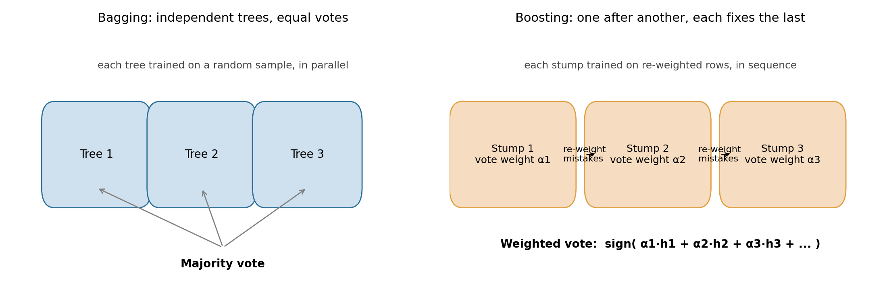
AdaBoost (Adaptive Boosting) is the classic boosting algorithm, and its weak model is a decision stump, a decision tree with a single split. A stump asks one yes/no question about one variable, for example “was the claim filed within 6.5 days of the service?”, and predicts a class for each side. A single stump is a very weak classifier, but a few hundred of them, each focused on different difficult cases, can form a strong one.
AdaBoost works in rounds. It begins by giving every training claim the same weight. In each round it fits a stump to the weighted data and measures the stump's weighted error ε, the total weight of the claims it misclassified. It then gives the stump a vote weight, α = ½ ln((1 − ε) / ε). A stump that is nearly always right has a small ε and a large α, a stump that is barely better than a coin flip (ε close to 0.5) has an α near zero, and a stump worse than a coin flip would get a negative α. After each round the claim weights are updated with wi ← wi · e−α yi h(xi) and then rescaled to sum to 1, where yi and h(xi) are the true and predicted labels coded as −1 or +1. Claims the stump got right shrink in weight, and claims it got wrong grow, so the next stump is forced to pay attention to them.
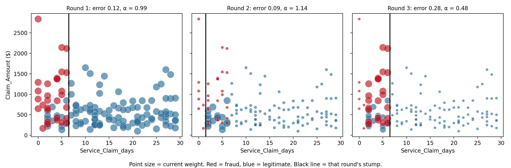
Service_Claim_days and Claim_Amount. Point size shows each claim's current weight, and the black line is that round's stump. In round 1 every claim has the same weight. After each round the claims the stump misclassified become larger, and the next stump is fitted to the re-weighted data. The weighted error and α of each round are shown above the panels.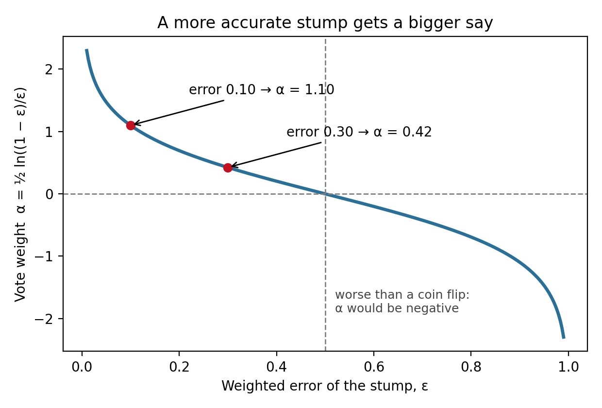
The final prediction is a weighted vote of all the stumps, H(x) = sign( α1h1(x) + α2h2(x) + … + αMhM(x) ). Each stump votes +1 for fraud or −1 for legitimate, the votes are multiplied by the stumps' α values, and the sign of the total gives the class. A learning rate between 0 and 1 shrinks each stump's contribution, which makes the model learn more slowly and often more carefully, and the number of rounds controls how many stumps are added. These two settings are tuned in the Results section. AdaBoost is a classifier, so in this project it is used for the fraud label and not for claim amounts.
Data Prep
Supervised models learn from rows whose correct answers are already known, so AdaBoost needs a labeled target. The analysis uses the same health insurance claims dataset as the earlier tabs, with 10,000 claims and 23 variables, and Is_Fraud supplies the known labels (0 for a legitimate claim and 1 for a fraudulent claim). The classes are imbalanced, with 9,171 legitimate claims (91.71%) and 829 fraudulent claims (8.29%).
Link to the labeled sample data (CSV): ab_prepared_data.csv
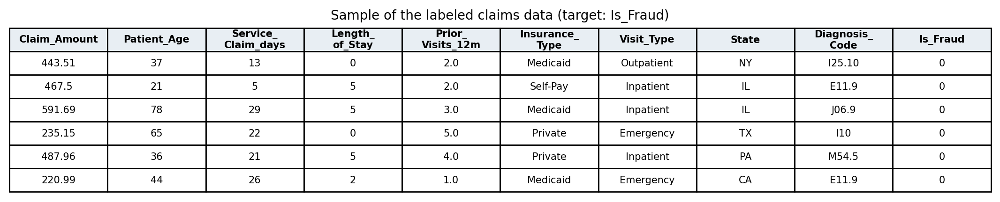
Is_Fraud, is the known class label. Only a subset of the 14 predictors is shown.The 14 predictors are the same ones used for the decision tree: Claim_Amount, Patient_Age, No_of_Claims_Provider, Service_Claim_days, Length_of_Stay, Prior_Visits_12m, Chronic_Condition_Flag, Insurance_Type, Patient_Gender, Provider_Specialty, Visit_Type, State, Diagnosis_Code, and Procedure_Code. The target was excluded from the predictors so the model never sees the outcome it is trying to predict.
Converting Categorical Columns to Numbers
AdaBoost in scikit-learn needs numeric inputs, and seven of the predictors are categories (insurance type, gender, specialty, visit type, state, diagnosis code, and procedure code). Each one was converted with one-hot encoding, which replaces a category column with one 0/1 column per category. For example, Insurance_Type has five values, so it becomes five columns, and each claim has a 1 in the column that matches its insurance type and 0 in the others. The seven numeric predictors were left unchanged, because the stumps choose their own split thresholds and do not need scaling. The encoding produced 51 numeric features in total. The encoded columns were defined from the training set, and the testing set was lined up to those same columns, so the testing set had no influence on the encoding.
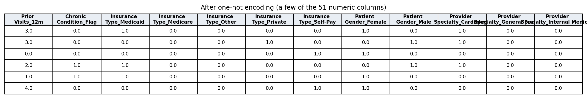
The step on one column, Insurance_Type, is shown below. The first three training claims are Medicaid, Private, and Self-Pay, and each becomes a row with a single 1 in the matching column.
Insurance_Type Insurance_Type_Medicaid Insurance_Type_Medicare Insurance_Type_Other Insurance_Type_Private Insurance_Type_Self-Pay
9326 Medicaid 1 0 0 0 0
5375 Private 0 0 0 1 0
1146 Self-Pay 0 0 0 0 1Training and Testing Sets
The labeled data was divided into a training set, used to build and tune the model, and a testing set, used once at the end to measure how well the model predicts claims it has never seen. The split was 80/20 with Scikit-learn's train_test_split and random_state=42, stratified on Is_Fraud so that both sets have the same fraud rate. It is the identical split used for Naive Bayes, the decision tree, and logistic regression, so the results can be compared directly.
| Dataset | Observations | Legitimate | Fraudulent | Encoded Features |
|---|---|---|---|---|
| Training | 8,000 | 7,337 | 663 | 51 |
| Testing | 2,000 | 1,834 | 166 | 51 |
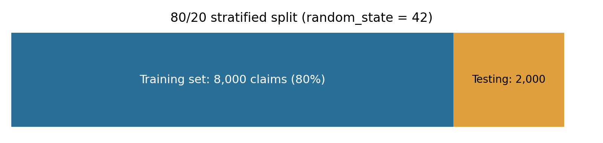
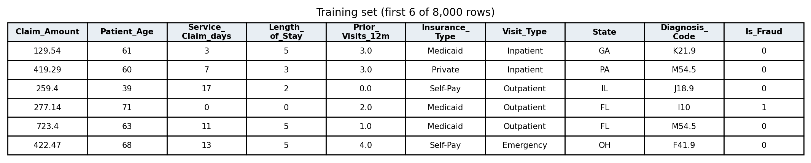
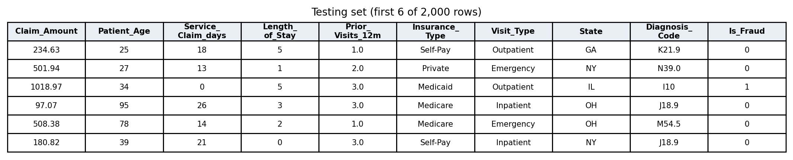
The two sets must be disjoint, meaning that no claim appears in both. If the model were tested on claims it had already seen, the test would measure memory instead of the ability to predict new claims, and the accuracy would be misleadingly high. AdaBoost keeps re-fitting the training claims it finds hardest, so it is a model that could easily over-fit them. The code checks that the two sets share 0 rows. The settings of the model, the number of rounds and the learning rate, were chosen using only the training set (a validation split and five-fold cross validation), so the testing set influenced none of the modeling decisions.
Code
The model was fitted in Python with scikit-learn's AdaBoostClassifier, using a decision stump (a tree of depth 1) as the weak learner. No class weights were applied to the stumps, because AdaBoost already re-weights the claims it misclassifies from round to round.
from sklearn.tree import DecisionTreeClassifier
from sklearn.ensemble import AdaBoostClassifier
stump = lambda: DecisionTreeClassifier(max_depth=1, random_state=42)
grid = GridSearchCV(AdaBoostClassifier(estimator=stump(), random_state=42),
{"n_estimators": [50, 100, 200, 400],
"learning_rate": [0.05, 0.1, 0.5, 1.0]},
cv=StratifiedKFold(5, shuffle=True, random_state=42),
scoring="average_precision")
grid.fit(X_train_oh, y_train)
model = grid.best_estimator_ # learning_rate 0.5, 400 stumpsResults
The AdaBoost model addresses the early fraud detection part of the research question, so, like the decision tree, it predicts whether a claim is fraudulent. It does not predict claim amounts, claim frequency, or premiums.
Tuning the Number of Rounds and the Learning Rate
Two settings control AdaBoost: the number of rounds (n_estimators, how many stumps are added) and the learning rate (how much each stump counts). To see how they matter, a quarter of the training set was held out as a validation set, and the model was trained on the remaining three quarters with four learning rates. Accuracy on the validation set was recorded after every round, up to 400.
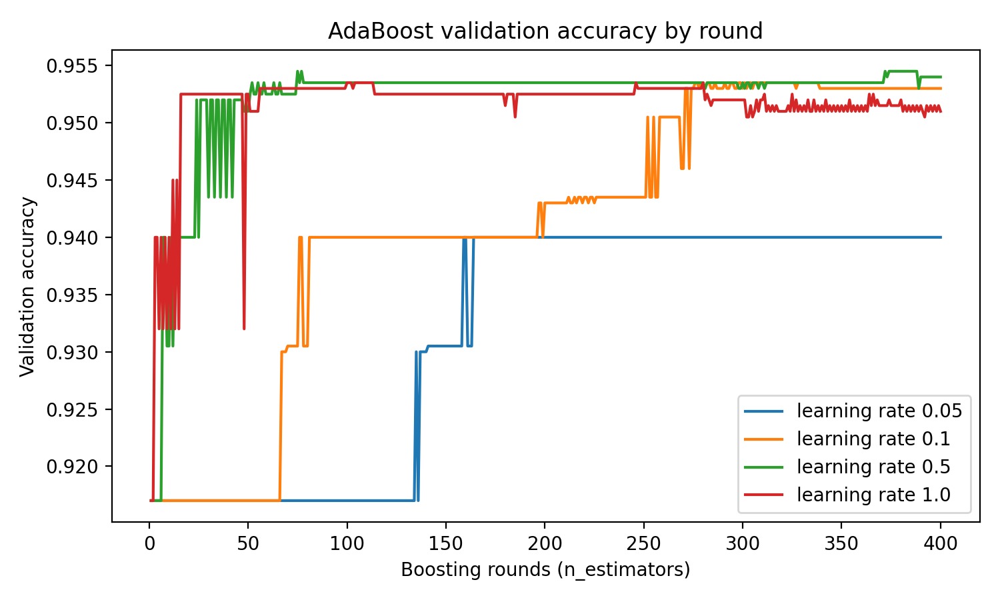
| Learning Rate | Best Validation Accuracy | At Round | Accuracy at Round 400 |
|---|---|---|---|
| 0.05 | 0.9400 | 159 | 0.9400 |
| 0.1 | 0.9535 | 276 | 0.9530 |
| 0.5 | 0.9545 | 75 | 0.9540 |
| 1.0 | 0.9535 | 100 | 0.9510 |
Because accuracy hides the fraud class (91.7% of claims are legitimate), the final settings were chosen with five-fold cross validation on the whole training set, scored by the area under the precision-recall curve (PR-AUC). Sixteen combinations of rounds and learning rate were tried.
| Learning Rate | 50 Rounds | 100 Rounds | 200 Rounds | 400 Rounds |
|---|---|---|---|---|
| 0.05 | 0.339 | 0.480 | 0.688 | 0.754 |
| 0.10 | 0.521 | 0.687 | 0.755 | 0.770 |
| 0.50 | 0.752 | 0.765 | 0.774 | 0.786 |
| 1.00 | 0.745 | 0.773 | 0.785 | 0.785 |
Final AdaBoost Model (Learning Rate 0.5, 400 Stumps)
The tuned model was refit on the full training set and evaluated once on the testing set of 2,000 claims, which contains 1,834 legitimate claims and 166 fraudulent claims. In the first rounds the stumps were fairly accurate and received large vote weights: the first five stumps had weighted errors of 0.083, 0.136, 0.192, 0.236, and 0.275 and vote weights of 1.20, 0.93, 0.72, 0.59, and 0.48. Each later stump faces a harder, re-weighted problem, so its error rises and its vote weight falls, which is the behavior described in the Overview. (Scikit-learn multiplies the log-odds by the learning rate, and at 0.5 this equals the ½ in the textbook formula.)
| Metric | Value |
|---|---|
| Accuracy | 95.60% |
| ROC-AUC | 0.973 |
| PR-AUC (baseline 0.083) | 0.803 |
| Fraud Precision | 79.10% |
| Fraud Recall | 63.86% |
| Fraud F1-Score | 0.707 |
| Specificity (Legitimate Recall) | 98.47% |
| False Positives | 28 |
| False Negatives | 60 |
| Predicted Legitimate | Predicted Fraud | Total | |
|---|---|---|---|
| Actual Legitimate | 1,806 | 28 | 1,834 |
| Actual Fraud | 60 | 106 | 166 |
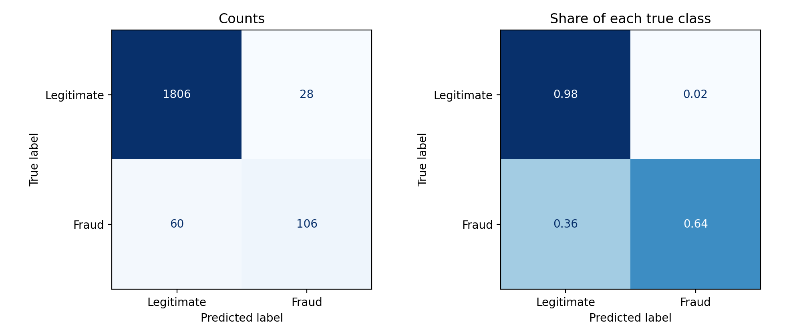
The accuracy of 95.60% is above the 91.70% that a model labeling every claim legitimate would reach, so, unlike the earlier fraud models, AdaBoost beats the no-skill baseline on accuracy. The more informative measures are precision and recall. Of the 134 claims the model flagged, 106 were truly fraudulent (79.10%), roughly 9.5 times the 8.3% fraud rate in the test set, and it flagged only about 6.7% of all claims. The cost is recall: it found 106 of the 166 fraudulent claims (63.86%) and missed 60.
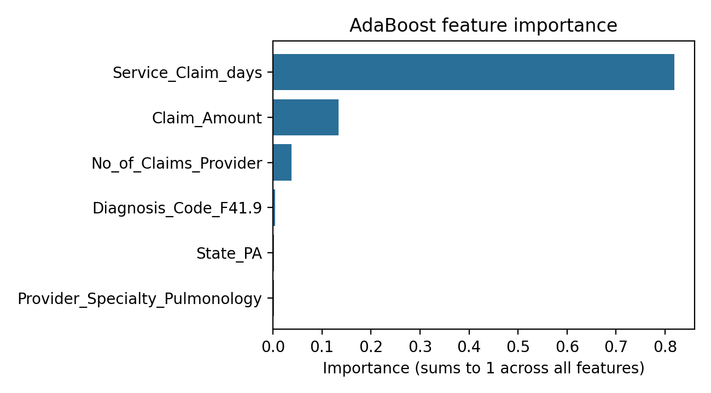
Service_Claim_days accounts for about 82% of it, Claim_Amount for about 13%, and No_of_Claims_Provider for about 4%. Every other feature contributes less than 0.5%. These importances are descriptive and are not evidence that any characteristic causes fraud.Comparison with the Decision Tree
| Metric | Decision Tree | AdaBoost | Difference |
|---|---|---|---|
| Accuracy | 87.35% | 95.60% | +8.25 points |
| Fraud Precision | 39.10% | 79.10% | +40.0 points |
| Fraud Recall | 93.98% | 63.86% | −30.1 points |
| ROC-AUC | 0.966 | 0.973 | +0.007 |
| PR-AUC | 0.761 | 0.803 | +0.042 |
| False Positives | 243 | 28 | −215 |
| False Negatives | 10 | 60 | +50 |
AdaBoost did better overall. Its accuracy was 8.25 percentage points higher, its precision was about twice as high (79.1% versus 39.1%), it raised only 28 false alarms instead of 243, and it scored higher on both ROC-AUC (0.973 versus 0.966) and PR-AUC (0.803 versus 0.761). The tree, however, caught far more fraud (156 of 166 claims versus 106), so the two models sit at different points of the precision and recall trade-off. That difference is partly a design choice. The tree was trained with balanced class weights to favor recall, while AdaBoost used the default 0.5 cutoff with no class weights. The threshold-free measures give the fairest comparison, and they show a real but moderate improvement for AdaBoost (PR-AUC +0.042, ROC-AUC +0.007). Both models also agree on what matters most, since each is driven mainly by Service_Claim_days and then Claim_Amount.
Conclusions
AdaBoost strengthened the fraud detection results. The tuned model, 400 stumps with a learning rate of 0.5, reached an accuracy of 95.6%, an ROC-AUC of 0.973, and a PR-AUC of 0.803, the best scores among the models tested so far. When it flagged a claim, the claim was fraudulent 79.1% of the time, about twice the precision of the decision tree, and it raised only 28 false alarms out of 1,834 legitimate claims. For an insurer, this means a reviewer's time is far better spent, since nearly four in five flagged claims are worth investigating. The price is that 60 of the 166 fraudulent claims (36%) were not flagged. The result also shows how boosting works in practice: no single stump is accurate, but the weighted vote of hundreds of stumps, each focused on the claims its predecessors misjudged, produced a much more precise classifier than one tree.
The model also repeats a message from the earlier tabs. About 82% of its importance comes from Service_Claim_days, with a further 13% from Claim_Amount and 4% from No_of_Claims_Provider, while patient, insurance, state, and diagnosis characteristics contributed almost nothing. Fraud in this dataset is therefore mainly a pattern of claims submitted soon after service, for larger amounts, by providers with many claims, all of which are known when a claim arrives. This supports the early fraud detection goal of the project, but it does not answer the pricing side. AdaBoost predicts a class, so it says nothing about how much a claim will cost or how often claims occur, and the linear regression on the previous tab found that claim cost was barely explained by the available characteristics. Fraud scores from this model could serve as an additional input for risk-based pricing, while severity and frequency still depend on the models that follow.
Several limits apply. The testing set holds only 166 fraudulent claims, so each missed or caught claim moves the recall by about 0.6 points. The best number of rounds (400) is the largest value tried, so the tuned model might improve with more rounds. AdaBoost and the decision tree also operate at different cutoffs, so the gap in precision and recall is partly a matter of threshold and not only of model quality, and a lower cutoff would let AdaBoost trade some precision for more recall. Finally, the patterns are very clean (one variable explains most of the signal), which suggests the data may be synthetic and that real claims could be harder to separate. The next two models, gradient boosting and XGBoost, build on the same idea and will show whether fitting each new tree to the remaining errors, instead of re-weighting claims, can improve on both fraud detection and the weak severity predictions.